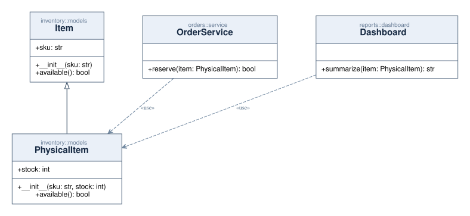
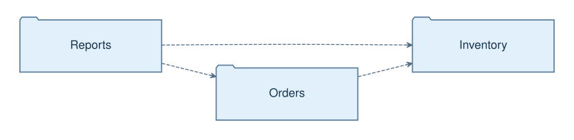

Actividad
Visualiza ramificaciones, bucles, excepciones y recorridos posibles del programa.
Explora el flujo y la arquitectura de proyectos Python con diagramas de actividad, clases y paquetes UML. Sin ejecutar el código analizado, con referencias a su origen.
01 def process(order):
02 if order.is_valid():
03 try:
04 return submit(order)
05 except TimeoutError:
06 return retry(order)
07 return NoneUna herramienta para entender decisiones, declaraciones y dependencias sin perder la referencia al código fuente.
Visualiza ramificaciones, bucles, excepciones y recorridos posibles del programa.
Extrae clases, atributos, métodos, herencia y relaciones respaldadas por evidencias.
Representa paquetes e importaciones para explorar dependencias entre módulos.
Una selección de tres diagramas generados a partir de código de demostración. No son dibujos recreados a mano.
Decisiones y rutas conservadoras vinculadas al origen.

Declaraciones, generalizaciones y dependencias que el análisis puede justificar.

Imports estáticos y organización de paquetes con notación visual moderna.

PyFlowMap ofrece una interfaz de línea de comandos y un servidor MCP opcional. Requiere Python 3.11+ y Graphviz para renderizar SVG/PNG con ese backend.
Distribución: los wheels se construyen localmente en dist/; no hay paquetes publicados en PyPI. El repositorio de desarrollo permanece privado durante la preparación de la distribución pública.
# Inspecciona un proyecto
pyflowmap inspect ./my_project
# Diagrama de actividad
pyflowmap analyze ./my_project --format all
# Clases UML
pyflowmap analyze ./my_project --diagram-type class --format all --renderer graphviz
# Paquetes UML
pyflowmap analyze ./my_project --diagram-type package --format all --renderer graphvizSe analiza el AST. No se importa ni ejecuta el código fuente del proyecto.
La salida JSON conserva símbolos y referencias para interpretar los diagramas.
El comportamiento dinámico desconocido no se adivina. UML representa un subconjunto estático conservador.